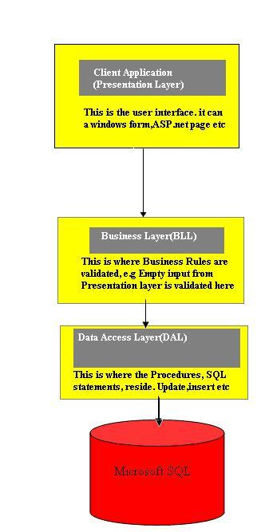
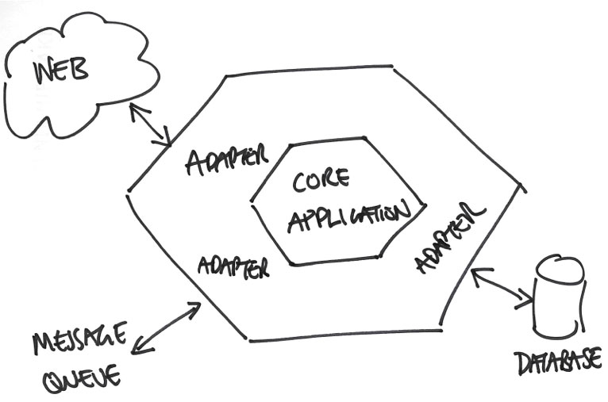

The Plan
- Talk
- Look at Code
A Story
Clear Channel's Budget and Forecast App
n-Tier

The Result

A Better Architecture
- Forces abstraction of third party libraries
- Limits the effect of the database.
- Defends against legacy code.
- Supports unit tests.
- Show NServiceBus code
Key Concept
BUSINESS RULES => Central Abstraction
NOT the database
Another View

Sample Project
Tiny Returns
To the code...
Polymorphism = Loose Coupling
Unit Testing
- Substitute Test Doubles for Outer Layer Objects
- Can Simulate Outer Objects
Direction of Dependencies
Dependency Inversion Principal
soliD